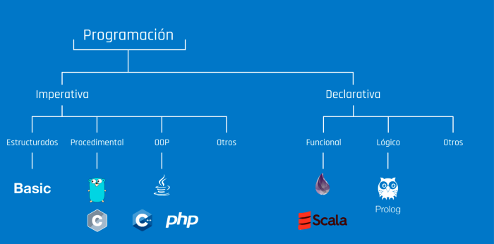

TAREA 1
¿QUÉ ES UN PARADIGMA?
No importa si se aprende con libros, se toman cursos o se ven videos, la mayoría de los desarrolladores están preocupados por primero escribir código y que compile en lugar de responder preguntas mas grandes, por ejemplo:
- ¿Cual es problema?
- ¿Cual es la solución?
Es difícil cuando estamos iniciando que veamos el océano, normalmente lo que vemos es una laguna o algo mucho mas pequeño. La palabra paradigma en principio no tiene relación con la informática, viene de algo mucho mas complejo, el origen de la palabra es griego y hoy en día se utiliza en frases muy bonitas para vender como:
- Rompamos paradigmas
- Resolvamos paradigmas
El problema de estas frases en realidad es que no tienen sentido si no tienen un contexto, la palabra paradigma se podría aplicar a cualquier área y en cualquier contexto, ese es el verdadero problema. Para que exista un paradigma tiene que existir un problema
Ejemplo de paradigma:
Tenemos a 10 personas en un cuarto y les proponemos una tarea, que salgan del cuarto en el que se encuentran, el único hecho es que el cuarto no tiene puertas o ventanas. Una persona puede intentar por fuerza bruta romper una pared. Otra personas puede intentar escarbar para atravesar el muro, otra puede buscar un acertijo, etc.
En realidad tenemos algo que observar:
El problema está definido, es salir del cuarto. Cada quien puede abordar el problema como quiera, puede ser que si necesitamos agrupar las soluciones que intentan, el que intenta patear la pared y el que intenta golpear están utilizando el mismo paradigma: la fuerza bruta los que están intentando escarbar atraves del muro y los que intentan encontrar un acertijo están intentando utilizar otro paradigma y así podríamos clasificar las diferentes soluciones. Paradigma se puede definir como un modelo o un patrón, esto quiere decir que un paradigma tiene un conjunto de normas o reglas que debemos de seguir para asegurarnos que estamos aplicando lo que el paradigma dice. Para determinado problema podemos aplicar diferentes modelos/metodologías/técnicas/patrones para llegar a una solución..
PARADIGMAS DE PROGRAMACION
Podemos decir que los paradigmas son propuestas que podemos adoptar o seguir para solucionar un problema. Por eso es mucho mas importante antes de escribir código 2 cosas:
- Conocer el problema lo mejor posible
- Conocer los modelos/metodologías/técnicas/patrones que podemos aplicar.
De nada sirve que tu código compile y en algunas casos que solucione el problema si es que otro paradigma podría resolverlo de mejor modo o evitarte horas de trabajos extras y sin sentido, esa es la razón mas importante para conocer los paradigmas, muchos desarrolladores descubren que están abordando un problema de forma equivocada ya casi al terminar la solución y eso puede ser un golpe duro para el proyecto y para el desarrollador.
¿CUÁLES SON LOS PARADIGMAS DE LOS LENGUAJES DE PROGRAMACIÓN?
PARADIGMA ESTRUCTURADO
El paradigma de la programación estructurado es probablemente el más usado para iniciar en la programación, muchas personas lo utilizan y no saben que esta utilizando un paradigma. Tiene reglas muy sencillas:
- El inicio del archivo es el inicio de la programación y el final del archivo es el final de la programación; en otras palabras es secuencial.
- Se pueden utilizar instrucciones de control como las condicionales (if)
- Se pueden utilizar instrucciones de iteración (Bucles)
Como puedes ver quedan de lado conceptos complejos como los objetos, clases, métodos y otros elementos, en realidad podemos ver que es lo básico que nos enseñan cuando iniciamos en la programación y pocas veces nos dicen que estamos aplicando un paradigma.
EJEMPLO DE PROGRAMACIÓN ESTRUCTURADA EN PYTHON
PARADIGMA DE PROGRAMACIÓN ORIENTADA A OBJETOS
El paradigma de la programación orientada a objetos es de los paradigmas mas usados para desarrollo de software en la industria, esto se debe a que los objetos y las clases son la base de muchos proyectos. Algunas de las cosas que debemos saber de este paradigmas son:
- Los objetos se crean y se destruyen
- Las clases son lo que utilizamos para definir los objetos
- Las clases pueden contener atributos y métodos.